Excel Template for Configuring External Settings in Energy Reports
To configure additional parameters, such as tariff, meter fee or tax, for the energy reports, you must specify values in an excel template. This template is available in the Energy Reporting library that hosts the report templates. These report templates as well as the Excel templates are deployed to the Tomcat server during template synchronization.
However, you cannot configure the Excel templates directly from the Tomcat server, you must edit it from the Energy Reporting library. For information on editing the file, see Editing the Excel Template for Configuring External Settings in Energy Reports.
You can use either of the following Excel templates for configuring additional Energy Report parameters:
EnergyReportsExternalSetting.xlsx: Consumption Cost Report, Consumption Emissions Report, Consumption Performance Report, Consumption Budget Report
EnergyReportsExternalSettingHDD.xlsx: Consumption HDD Regression Line Report, Consumption Energy Signature Report, Consumption Degree Days Corrected Report
The parameters to be configured in the Excel templates for the different reports are as follows:
Area IDs
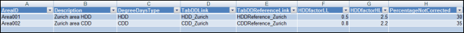
Name | Description |
AreaID | Key ID for the area. |
Description | Description of the area/zone to be associated with the building. |
DegreeDaysType | Type of Degree Days, HDD or CDD. |
TabDDLink | Name of the worksheet tab where the degree days are stored. |
TabDDReferenceLink | Name of the worksheet tab where the degree days reference are stored. |
HDDfactorLL | Low limit for the consumption factor creation. |
HDDfactorHL | High limit for the consumption factor creation. |
PercentageNotCorrected | Percentage of the consumption that will not be corrected by the Degree Days Factor. |
Consumption Budget Report Parameters
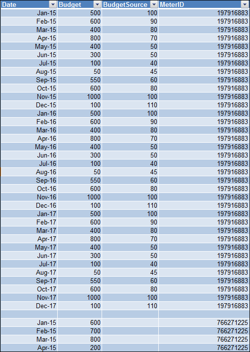
Budget | ||
Name | Description | Additional Notes |
Date | The month and year for which the budget is to be specified |
|
Budget | Consumption budget planned for the month and year. This is for the main meter. |
|
BudgetSource | Consumption budget planned for the month and year. This is for the source meter. This is applicable only if the managed meter has a source meter. |
|
MeterID | ID of the managed meter for which the budget is to be specified. | You can view the IDs of the managed meters in your system onEnergyReportsExternalSetting.xlsx. |
MeterName | Name of the managed meter to which this tariff is applicable. | You can view the names of the managed meters in your system inEnergyReportsExternalSetting.xlsx. |
Consumption Cost Report Parameters
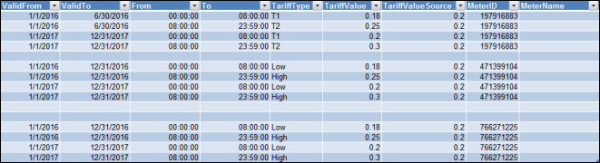
MeterTariffData | ||
Name | Description | Additional Notes |
ValidFrom | Start date from when the tariff is applicable. | The ValidTo must always be greater than Valid From For example, if tariff is applicable from 1st January, 2016 to 31st December, 2016, then the ValidFrom value will be 1st January, 2016 and the ValidTo value will be 31st December, 2016. If there is a change in the tariff from 1st January, 2017, then you will have to add a new row for the same managed meter and provide the required information. |
ValidTo | End date till which the tariff is applicable. | |
From | The start time from when the tariff is applicable. | There can be situations where more than one tariff is applicable according to time periods of the day. For example, from 09.00 to 20.00 HRS is the time of the day when the energy consumption is the maximum and from 20.01 to 08.59 HRS is a period when energy consumption is low. So, the tariff for the peak period may be different than the tariff for the non peak period. You can specify the start and end time period using the From and To fields. |
To | The end time till which the tariff is applicable. | |
TariffType | Type of tariff according to the time period. | In this field, you can classify the tariffs according to the different time periods, for example, peak period tariffs (T1), low period tariffs (T2). The type of tariffs have to be identical for all the managed meters. For example, you can have tariff types that are identified as T1, T2 or tariff types that are identified as High, Low. However, you cannot have a combination of the different tariff types such as T1 and Low or T2 and High for the managed meters. |
TariffValue | Value of the tariff according to the different types of tariffs identified. The tariff value specified here is for the main meter. For example, the value of peak period tariffs (T1) can be 0.75, the value of low period tariffs (T2) can be 0.50.
The tariff value must be specified in the ouput media unit that has been set for the managed meter. For example, if the output media unit for the managed meter is set to MWh, then the tariff value must be specified in MWh units. |
|
TariffValueSource | Tariff value for the source meter that is specified according to the different types of tariffs identified. The tariff value specified here is for the source meter The tariff value must be specified in the ouput media unit that has been set for the source meter. For example, if the output media unit for the source meter is set to m3, then the tariff value must be specified in m3 units. You need to specify a value in this field, only if the managed meter has a source meter configured. | For information on the source meter and its configuration, see Overview of Managed Meters and Managed Meters Workspace. |
MeterID | ID of the managed meter to which this tariff is applicable. | You can view the IDs of the managed meters in your system on EnergyReportsExternalSetting.xlsx. |
MeterName | Name of the managed meter to which this tariff is applicable. | You can view the names of the managed meters in your system on EnergyReportsExternalSetting.xlsx. |
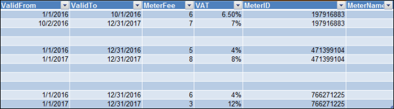
MeterVatFee | ||
Name | Description | Additional Notes |
ValidFrom | Start Date from when the VAT and meter fee is applicable. | The ValidTo must always be greater than Valid From. For example, if the VAT is applicable from 1st January, 2016 to 31st December, 2016, then the ValidFrom value will be 1st January, 2016 and the ValidTo value will be 31st December, 2016 If there is a change in the VAT and meter fee from 1st January, 2017, you will have to add a new row for the same managed meter with the above information. |
ValidTo | End Date till which the VAT and meter fee is applicable. | |
MeterFee | Amount charged by the power supplier towards the rental of the meter. | Enter the meter fee on a per month basis. |
VAT | Percentage of tax applied on the bill amount. |
|
MeterID | ID of the meter to which the VAT and meter fee is applicable. This is a mandatory field. | You can view the IDs of the managed meters in your system onEnergyReportsExternalSetting.xlsx. |
MeterName | Name of the managed meter to which the VAT and meter fee is applicable. This is an optional field. | You can view the names of the managed meters in your system onEnergyReportsExternalSetting.xlsx. |
Consumption Emissions Report Parameters
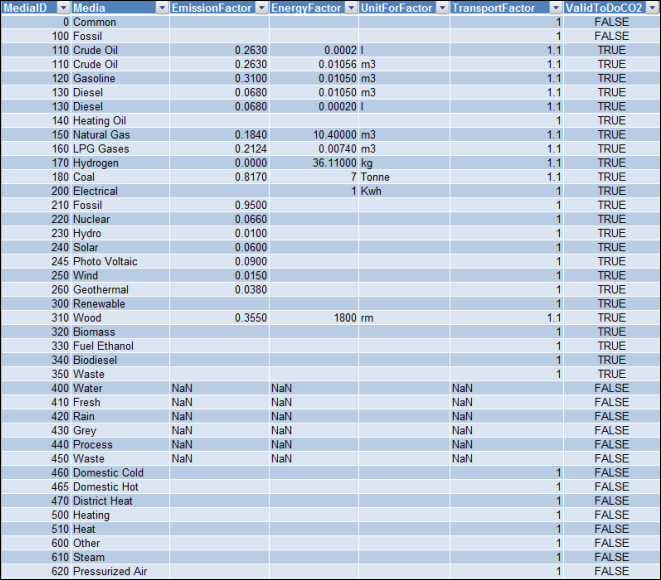
Media Emission | ||
Name | Description | Additional Notes |
MediaID | Specify the ID of the media. The MediaID can be obtained from the Media text group. | The Excel template already contains the Media ID from the Headquarter library. |
Media | Specify the type of media. The name of the media can be obtained from the Media text group. | The Excel template already contains the name of the media from the Headquarter library. |
Emission Factor | Specify the quantum of the emission factor that was released in the environment as a result of the energy generation process using the specified media. | An emission factor provides information on the quantum of pollutants released in the environment as a result of energy generated from a specific medium. For example, by generating 1 KWh of electricity using nuclear media, an approximate 0.0660 kg of carbon dioxide is released in the environment. |
EnergyFactor | Enter the value for the energy factor. | The energy factor is used to convert the consumption recorded in a unit other than KWh to KWh. For example, if the consumption is recorded in M3, then using the energy factor, you can convert the consumption in M3 to KWh. For more information, see CO2 Emissions in Consumption Emissions Report from the Overview of Energy Reporting section. |
UnitForFactor | Enter the value of the unit for factor. The value of the UnitForFactor must be identical to the output unit of the managed meter and must be in the same case (upper or lower) as the output unit | For electricity meters whose MediaGroup is Electricity, you need to specify the UnitForFactor only for the MediaGroup. There is no need to specify the UnitForFactor for the media items in Electricity mediagroup. |
TransportFactor | Specify the value for the transport factor. | Transport factor is the quantum of emission that is generated during the transport of the specific media. |
ValidToDoCO2 | Specify if the Consumption Emissions Report must perform calculations to calculate the emission as a result of the energy generation process using the specific media. The values to be specified in this field are TRUE or FALSE. | After the report is executed,
|
Consumption Performance Report Parameters
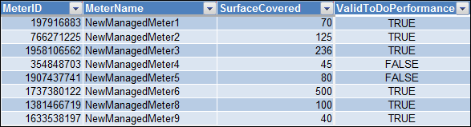
Meter Surface Covered | ||
Name | Description | Additional Notes |
MeterID | ID of the managed meter for which the performance parameter is to be configured. | You can view the IDs of the managed meters in your system inEnergyReportsExternalSetting.xlsx. |
MeterName | Name of the managed meter for which the performance parameter is to be configured. | You can view the names of the managed meters in your system inEnergyReportsExternalSetting.xlsx. |
SurfaceCovered | Area in square meter units (M2) that is covered by the managed meter |
|
ValidToDoPerformance | Specify if the Consumption Performance Report must perform calculations on the specified managed meter to calculate it's performance. The values to be specified in this field are "True" or "False" | After the report is executed,
|
Managed Meter Parameters
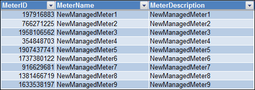
MeterIDList Worksheet | ||
Name | Description | Additional Notes |
MeterID | ID of the managed meter.
| You can view the IDs of the managed meter in your system by configuring additional energy report parameters in Manually Executing Energy Reports. |
MeterName | Name of the managed meter. | You can view the names of the managed meters in your system by configuring additional energy report parameters in Manually Executing Energy Reports. |
MeterDescription | Description of the managed meter. | You can view the description of the managed meters in your system by configuring additional energy report parameters in Manually Executing Energy Reports. |
Consumption Heating/Cooling Degree Days Reports
The Consumption Heating/Cooling Degree Days Reports include the following reports:
- Consumption_HDD_RegressionLine
- Consumption_HDD_Corrected
- Consumption_EnergySignature
Based on the report to be executed, the parameters in the EnergyReportsExternalSettingHDD.xlsx excel sheet will be referred for calculating the consumption.
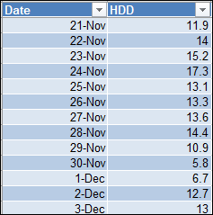
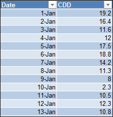
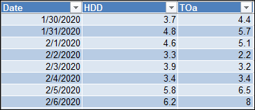
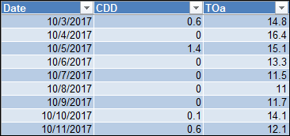